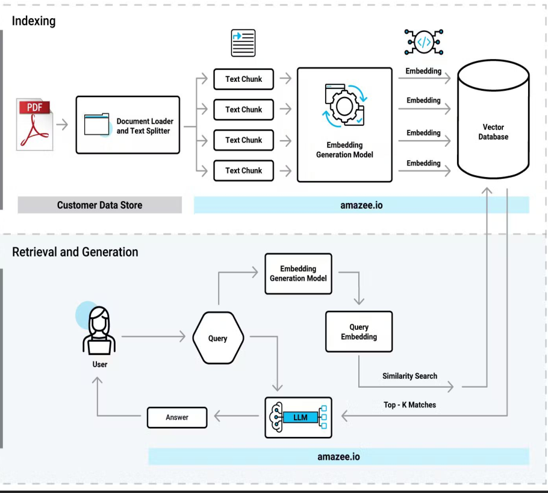

This project implements a Retrieval-Augmented Generation (RAG) pipeline to answer questions about 32 non-destructive pavement evaluation (NDE) technologies. Unlike a simple FAQ bot, our system retrieves context-relevant chunks from technical PDFs, embeds them via SentenceTransformer, indexes with FAISS, and then generates precise answers with BERT, GPT-2, or Groq (Llama 3.1).
Maintaining and evaluating pavement infrastructure relies on a range of NDE methods—ground‑penetrating radar, deflectometers, thermography, ultrasonic tomography, and more. Each technique produces specialized terminology and data. Traditional search or FAQ bots struggle with such domain specificity.
This RAG pipeline:
- Ingests dozens of PDF manuals and reports from FHWA’s InfoAvements portal.
- Extracts text and images into small overlapping chunks for semantic coherence.
- Embeds each chunk using state‑of‑the‑art SentenceTransformers.
- Indexes embeddings in a FAISS vector store for lightning‑fast nearest‑neighbor retrieval.
- Generates answers by conditioning a chosen QA model on the retrieved context.
By unifying retrieval and generation, our system achieves both high precision (via dense search) and fluent, explainable answers (via generative models).
Architecture is given below

- Comprehensive Coverage
Support all 32 documented pavement NDE technologies with chunk‑level context. - Flexible Inference
Offer extractive QA (BERT), lightweight generative QA (GPT‑2), and high‑accuracy generative QA (Groq Llama 3.1). - Scalable Indexing
Build a FAISS index that scales to thousands of chunks with constant‑time retrieval. - Rigorous Evaluation
Collect human ratings on coherence, fluency, relevance, and overall quality; analyze by model and question type.
pavement-nde-rag-qa/
├── data/
│ ├── pavement_data.json # Extracted chunk-level JSON
│ ├── Questions_and_Model_Ratings.csv # QA evaluation results
│ └── images/
│ ├── rag_pipeline.png # RAG pipeline diagram
│ ├── model_avg_scores.png # Bar chart of average model scores
│ └── question_type_heatmap.png # Heatmap of question-type performance
├── extraction/
│ └── Extraction_final.py # PDF download & text/image extraction
├── models/
│ ├── Bert_final.py # BERT-based QA model integration
│ ├── GPT2.py # GPT-2-based QA model integration
│ └── Groq.py # Groq (Llama 3.1)-based QA model integration
├── EDA/
│ ├── pavement_eda.ipynb # Notebook for data exploration & visualizations
│ └── figures/ # Generated plots and heatmaps
├── retrieval/
│ ├── embeddings.py # Compute & store FAISS embeddings
│ └── index.py # Build & query FAISS index
├── pipeline/
│ └── rag_pipeline.py # Main RAG orchestration script
├── requirements.txt # Python dependencies
└── README.md # This file
-
Clone the repo
git clone <repo_url> cd <repo_folder>
-
Create & activate a virtualenv
python -m venv .venv source .venv/bin/activate # macOS/Linux .venv\Scripts\activate # Windows
-
Install dependencies
pip install -r requirements.txt
-
Download spaCy model
python -m spacy download en_core_web_sm
PDFs are processed by extraction/Extraction_final.py into 300-character overlapping chunks with associated images, saved in data/pavement_data.json.
pipeline/rag_pipeline.py accepts a user query, retrieves the top-K relevant chunks, and prompts the chosen QA model (models/Bert_final.py, models/GPT2.py, or models/Groq.py) to produce an answer.
| Model | Mean Overall Score |
|---|---|
| BERT | 5.75 |
| GPT-2 | 5.46 |
| Groq (Llama 3.1) | 10.0 |
| Question Type | BERT | GPT-2 | Groq (Llama 3.1) |
|---|---|---|---|
| Who | 5.78 | 5.78 | 9.11 |
| What | 7.44 | 5.44 | 9.78 |
| When | 6.17 | 5.50 | 10.00 |
| Where | 6.67 | 5.50 | 9.50 |
| Why | 4.00 | 5.00 | 10.00 |
| How | 2.89 | 4.56 | 9.78 |
| Overall | 5.49 | 5.30 | 9.69 |
python pipeline/rag_pipeline.py \
--query "What is the function of the Half-Cell Potential method?" \
--model groq \
--top_k 5--model: one ofbert,gpt2,groq--top_k: number of chunks to retrieve (default: 5)--cache: reuse existing FAISS index
This project is licensed under the MIT License.